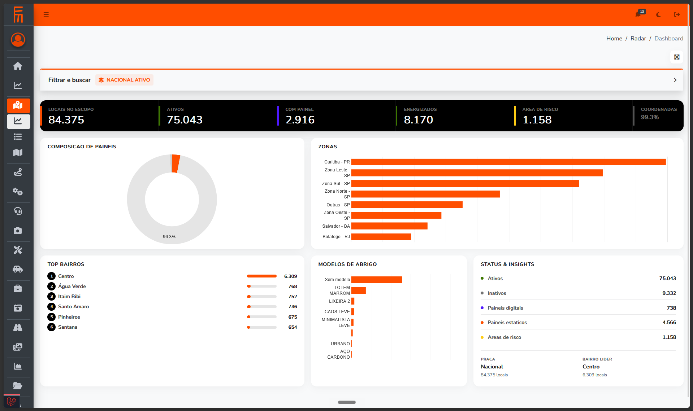
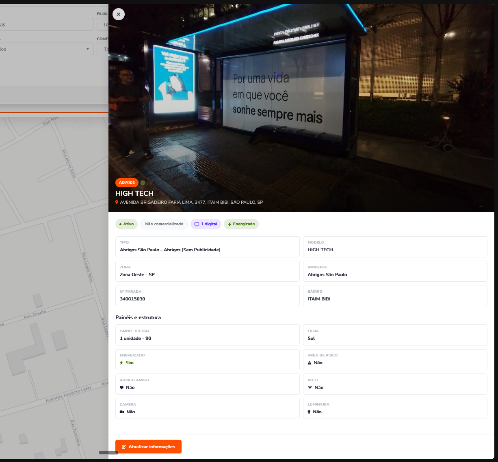
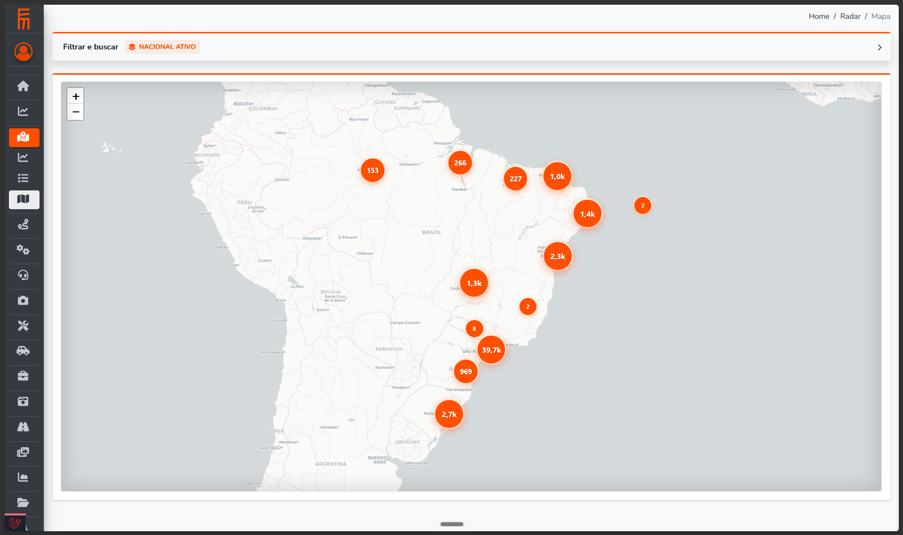
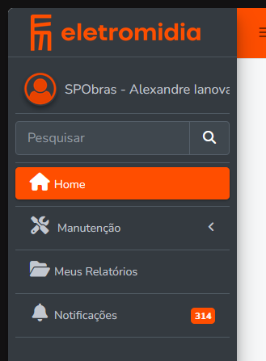
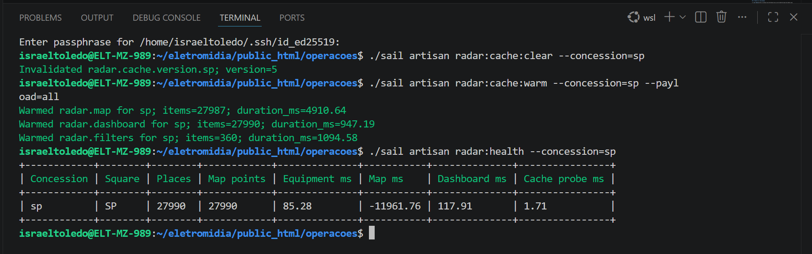

Problema
O time precisava enxergar equipamentos e indicadores de rua sem criar uma segunda aplicação, uma segunda autenticação ou um segundo modelo de permissão.
A implementação entrega uma experiência de operação, mapa, dashboard e detalhe dentro do fluxo real de login, permissão, escopo, cache e deploy do Operações.
O Radar deixa de ser um recorte paralelo e passa a usar a estrutura que já governa o Operações: sessão, perfil, permissão, menu, políticas e dados de Pontos.
O time precisava enxergar equipamentos e indicadores de rua sem criar uma segunda aplicação, uma segunda autenticação ou um segundo modelo de permissão.
Radar entra em /radar, com lista, mapa, dashboard e detalhe, preservando a fronteira de acesso por concessão, perfil e configuração.
Código e validação local estão prontos para revisão. O deploy ainda pede validação manual com tokens reais e confirmação do backend de cache.
A branch foi fechando riscos em ordem: contrato, escopo, UX, cache, permissão e evidência.
Registro visual direto das telas e fluxos que entram no PR.
Radar aparece dentro da navegação existente do Operações.

Filtros visíveis, sem Ambiente, com busca menos agressiva e multi-select aplicado ao fechar.

Indicadores e gráficos foram conectados ao contrato de dashboard, com cache próprio.

Atualizar informações só aparece quando o usuário pode usar o fluxo existente de Pontos.

Mapa usa payload próprio, sem carregar o contrato completo de cards.

Perfis não analistas ficam fora do Radar.

Clear, warm e health por concessão formam a rotina operacional de deploy.

Vídeo para mostrar menu, telas e dados escopados com um perfil real de analista.
Mapa curto dos arquivos que concentram a implementação e o risco de review.
routes/web.php, RadarController.php, resources/views/radar/index.blade.php e menu Blade/JS colocam o Radar em /radar.
RadarRepository.php, config/radar.php, Place.php e User.php aplicam concessão, praça, estabelecimento e filtros.
RadarCardResource.php, RadarDashboardResource.php, RadarMapPointResource.php e recursos de filtro/detalhe separam cards, mapa e dashboard.
RadarApp.vue, RadarEquipment.vue, RadarDashboard.vue, RadarMap.vue, charts GChart e Vuex entregam lista, dashboard, mapa e detalhe.
UserPolicy.php, migrations de perfil e ProfilePermissionSeeder.php deixam o Radar disponível apenas para devs e perfis analistas.
Comandos RadarCache*, assets em public/*, package*.json e teste RadarScopeBoundaryTest.php cobrem cache, bundle e regressão.
Essas decisões evitam dívida desnecessária e mantêm o Radar alinhado ao Operações.
Sem React, Tailwind, login próprio ou proxy separado. O módulo usa o stack existente para reduzir risco de operação.
A ordem correta é: escopo configurado do Radar, interseção com permissões/filtros do usuário e, por fim, filtros da tela. Filtro de tela só estreita resultado; não amplia concessão, praça ou estabelecimento.
Invalidação troca versões, não limpa cache global. Warmup aquece apenas payloads comuns por concessão.
Laravel Mix versiona assets para cache busting; se o deploy exigir bundles no Git, eles devem ser regenerados após resolver main.
O que já foi provado e o que ainda precisa de ambiente real.
./sail php vendor/bin/phpunit tests/Feature/Radar/ passou com 5604 asserções.
./sail artisan route:list --path=radar lista 10 rotas autenticadas.
Radar está configurado para SP, RJ, PR, RS, MG, BA, CP, GO, SO, SC, ST, PB, MA, AM, AL, PI, BE, CE, PE e DF. Clear/warm/health foi validado em SP, PR e BA.
A evidência local ainda indica CACHE_DRIVER=file. Redis existe em config/Docker, mas o deploy precisa confirmar o backend real em homolog/produção, principalmente se houver mais de um app server.
sp São Paulo/SP, rj Rio de Janeiro/RJ, curitiba Curitiba/PR, pr Curitiba/PR, rs Porto Alegre/RS, mg Belo Horizonte/MG, ba Salvador/BA, cp Campinas/CP, go Goiânia/GO, so Sorocaba/SO, sc Florianópolis/SC, st Santos/ST, pb João Pessoa/PB, ma São Luís/MA, am Manaus/AM, al Maceió/AL, pi Teresina/PI, be Belém/BE, ce Fortaleza/CE, pe Recife/PE e df Brasília/DF.
A branch já foi sincronizada com main, os conflitos foram fechados e os bundles foram regenerados a partir da árvore mergeada.
.gitignorepublic/css/app.csspublic/js/app.jspublic/mix-manifest.jsonMerge commit 9d2595c76: manteve /.claude, /AGENTS.md e /docs no .gitignore. Os assets em public/* não foram editados à mão; saíram de ./sail npm run production.
PR #876 segue aberto e mergeable. Head remoto atual: d88b68ecb. Após o merge, entraram os fixes da9eb81db (compatibilidade PHP 7), 54dfdbbe7 (recursão em chart data), bdf30fb52 (assets de produção) e remoções finais de docs locais fora do PR.
As perguntas que normalmente aparecem no review ficam respondidas aqui.